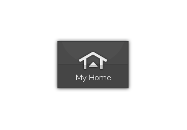

Bienvenue chez vous !
Après une longue journée de travail, votre seule envie: vous relaxer ! En entrant Calaos Home va vous préparer un environnement chaleureux, volets fermés, lumières tamisées, musique préférées.

Après une longue journée de travail, votre seule envie: vous relaxer ! En entrant Calaos Home va vous préparer un environnement chaleureux, volets fermés, lumières tamisées, musique préférées.
Partage de toute votre musique. Synchronisation multizone. Elle est accessible via votre réseau domestique. Ne cherchez plus, ne transférer plus, retrouvez en un instant le titre que vous souhaitez écouter.
Tous les éléments reliés à votre domotique sont scénarisables, par période, ambiance, lever/coucher de soleil ou activité diverse. Votre maison devient intelligente dès aujourd'hui et facilement grâce à nos outils dédiés.
Nous avons écrit des outils pour vous permettre de facilement configurer et modifier votre installation depuis votre ordinateur. Vous souhaitez étendre votre système? Installez Calaos Installer.
Calaos est une solution complète de domotique. Initialement Calaos était un système de domotique développé par la société du même nom, et partiellement Open Source. Lorsque la société a fermé ses portes courant 2013, l'intégralité du code source a été ouvert et mis sous licence GPLv3 et une petite communauté s'est formée pour continuer le développement.
La communauté s'aggrandissant chaque jour, le wiki et le forum sont la pour partager les informations et les bonnes idées. N'hésitez pas à nous rejoindre et nous aider!
Nous supportons: Les automates Wago, les Raspberry Pi, les ZiBASE de Zodianet,
les Cubieboard, les Squeezebox, les caméras IP, ... Nous avons déjà fait le travail.
Et nous allons supporter de plus en plus de plateformes matérielles à venir.
En plus, grâce à Calaos OS,
il suffit d'installer l'image sur une carte mémoire et vous aurez un système fonctionnel complet.
Avec Calaos vous pouvez rapidement et facilement vous installer vous même une installation complète. La communauté est la pour vous aider. Le Wiki est remplis d'information sur le fonctionnement, et le Forum est la pour répondre à toutes vos questions spécifiques. N'ayez pas peur, beaucoup d'utilisateurs sont la pour vous aider.
Une carte fille pour étendre les possibilité de calaos. Fonctionne sur Cubieboard, Raspberry Pi, ...
Les cartes Cubieboard1/2 basé sur des CPU Allwinner.
LA carte Raspberry Pi connu et reconnu pour le DIY.
Les machines basés sur des CPU Intel 32bits. (Atom)
Les machines basés sur des CPU Intel 64bits. (core i3/i5/i7)
Si vous avez du temps à donner, vous pouvez aider de plusieurs facons:
Vous souhaitez que Calaos puisse supporter votre matériel, nous pouvons vous aider en ayant accès à ce type de matériel. Vous pouvez donner un exemplaire aux développeurs pour qu'ils puissent être motivé afin d'ajouter le support dans Calaos. Dans tous les cas il n'y a aucune garantie pour que cela fonctionne. Si vous souhaitez donner du matériel, veuillez nous contacter.
Le projet Calaos a besoin d'argent pour plusieurs raisons: